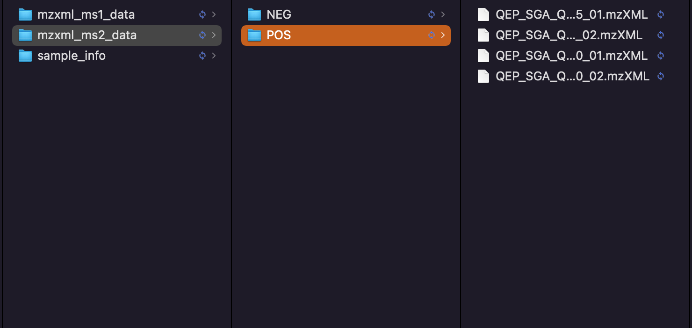
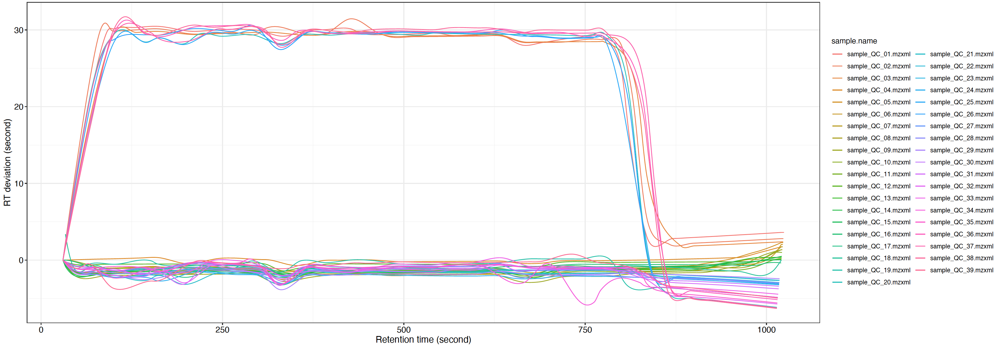

We have positive and negative mode. For each mode, we have control, case and QC groups. Control group have 110 samples, and case group have 110 samples as well.

12.1.1 Positive mode
massprocesser package is used to do the raw data processing. Please refer this website.
12.1.2 Code
The code used to do raw data processing.
library(tidymass)
Registered S3 method overwritten by 'Hmisc':
method from
vcov.default fit.models
--------------------
massdataset version: 0.99.8
--------------------
1.expression_data:[ 10149 x 259 data.frame]
2.sample_info:[ 259 x 4 data.frame]
259 samples:sample_06 sample_103 sample_11 ... sample_QC_38 sample_QC_39
3.variable_info:[ 10149 x 3 data.frame]
10149 variables:M70T73_POS M70T53_POS M70T183_POS ... M923T55_POS M992T641_POS
4.sample_info_note:[ 4 x 2 data.frame]
5.variable_info_note:[ 3 x 2 data.frame]
6.ms2_data:[ 0 variables x 0 MS2 spectra]
--------------------
Processing information
2 processings in total
create_mass_dataset ----------
Package Function.used Time
1 massdataset create_mass_dataset() 2022-02-23 08:37:06
process_data ----------
Package Function.used Time
1 massprocesser process_data 2022-02-23 08:36:42
We can see that there are 10,149 metabolic features in positive mode.

You can use the plot_adjusted_rt() function to get the interactive plot.
load("demo_data/mzxml_ms1_data/POS/Result/intermediate_data/xdata2")##set the group_for_figure if you want to show specific groups. And set it as "all" if you want to show all samples.plot =massprocesser::plot_adjusted_rt(object = xdata2, group_for_figure ="QC", interactive =TRUE)plot
12.1.4 Negative mode
The processing of negative mode is same with positive mode data.
12.1.5 Code
Same with positive mode, change polarity to negative.